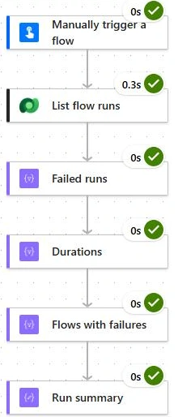
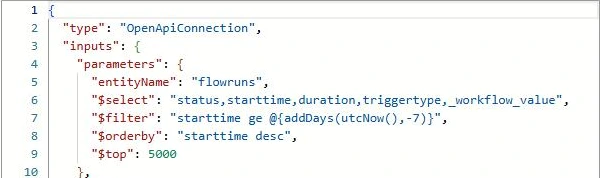
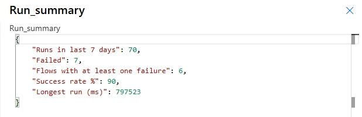

- Power Automate
- Level 10 · Enterprise ALM and admin · 6 of 6
Monitoring flows at scale
The run history page shows one flow at a time. Admins need the opposite view: every run in an environment, failures across all flows, the slowest ones. For solution flows, Dataverse already stores this in the FlowRun table, and a flow can read it like any other table.
A weekly health summary, built with a flow



length(union(body('Flows_with_failures'), body('Flows_with_failures')))| Piece | What it does |
|---|---|
Flows_with_failures | A Select that keeps only _workflow_value (the flow's ID) from each failed run. |
union(x, x) | Removes duplicate IDs. |
length(...) | How many different flows failed at least once. |
div(mul(100, sub(total, failed)), total)| Piece | What it does |
|---|---|
sub(total, failed) | Runs that didn't fail. |
mul(100, ...) | Multiply first, so integer division doesn't round to zero. |
div(..., total) | The success rate as a whole percentage. The demo wraps it in an if() to avoid dividing by zero. |
Add a Recurrence trigger and a Teams post, and this becomes a weekly health report. Useful columns on each run: status, starttime, endtime, duration (milliseconds), triggertype, errorcode, errormessage, and _workflow_value to link to the flow.
What to know about FlowRun
- Only solution flows get their runs stored here.
- Records are kept for 28 days by default, set by
FlowRunTimeToLiveInSecondson the Organization table. They use Dataverse database storage. - It's an elastic table, built for volume; normal Dataverse security roles control who can read it.
Across the tenant
- Automation center (Level 6): failures and recommendations for the flows you can see.
- Power Platform admin center analytics: usage and error trends per environment.
- CoE Starter Kit: a free set of solutions that inventories every flow, app and maker into Dataverse, with dashboards and clean-up processes.
- PowerShell admin cmdlets: list, disable or reassign flows in bulk:
# Admin module: Install-Module Microsoft.PowerApps.Administration.PowerShell
Add-PowerAppsAccount
# every flow in an environment, with owner and state
Get-AdminFlow -EnvironmentName <environment id> |
Select-Object DisplayName, Enabled, CreatedTime, @{n='Owner';e={$_.CreatedBy.userId}}
# turn off a flow that is misbehaving, without opening it
Disable-AdminFlow -EnvironmentName <environment id> -FlowName <flow id>New to this? Start from the basics optional
Elastic table: a Dataverse table type for very large, fast-growing data such as logs.
Inventory: a complete list of what exists, with owners, so nothing is forgotten.
Build it step by step optional
- Make sure the flows you care about are in solutions.
- Build a flow with List rows on Flow Runs, filtered to the last 7 days.
- Filter failures, count them, and compute a success rate and the longest duration.
- Post the summary to a Teams channel on a weekly Recurrence.
- For tenant-wide inventory, install the CoE Starter Kit in a dedicated environment.
Common mistakes
- Expecting non-solution flows in FlowRun.
- Raising the retention a lot without checking storage capacity.
- Reporting only failures. A flow that silently stopped running has no failures at all: also check flows with no runs.